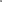

本文是有关 Three.js 的系列文章的一部分。的 第一篇文章是three.js 基础知识。如果 您还没有读过，并且您是 Three.js 的新手，您可能想读一下 考虑从这里开始以及有关设置您的环境的文章。的 上一篇文章是关于纹理的.
让我们回顾一下如何使用三个中的各种灯光。
从我们之前的一个示例开始，让我们更新相机。 我们将视野设置为 45 度，远平面设置为 100 个单位， 我们会将相机从原点向上移动 10 个单位，向后移动 20 个单位
*const fov = 45; const aspect = 2; // the canvas default const near = 0.1; *const far = 100; const camera = new THREE.PerspectiveCamera(fov, aspect, near, far); +camera.position.set(0, 10, 20);
接下来让我们添加 OrbitControls。 OrbitControls 让用户旋转
或围绕某个点旋转相机。 OrbitControls 是
Three.js 的可选功能，所以首先我们需要包含它们
在我们的页面
import * as THREE from 'three';
+import {OrbitControls} from 'three/addons/controls/OrbitControls.js';
中我们就可以使用它们了。我们将 OrbitControls 相机传递给
控件和用于获取输入事件的 DOM 元素
const controls = new OrbitControls(camera, canvas); controls.target.set(0, 5, 0); controls.update();
我们还将目标设置为绕原点上方 5 个单位运行
然后调用 controls.update 这样控件将使用新的
target.
接下来让我们做一些发光的东西。首先我们要打好基础 飞机。我们将应用一个看起来很小的 2x2 像素棋盘纹理 像这样

首先我们加载纹理，将其设置为重复，将过滤设置为 最近的，并设置我们希望它重复的次数。自从 纹理是一个 2x2 像素的棋盘，通过重复和设置 在棋盘上每次检查重复到平面大小的一半 正好是 1 个单位大；
const planeSize = 40;
const loader = new THREE.TextureLoader();
const texture = loader.load('resources/images/checker.png');
texture.wrapS = THREE.RepeatWrapping;
texture.wrapT = THREE.RepeatWrapping;
texture.magFilter = THREE.NearestFilter;
texture.colorSpace = THREE.SRGBColorSpace;
const repeats = planeSize / 2;
texture.repeat.set(repeats, repeats);
然后我们创建一个平面几何体、平面材料和网格 将其插入场景中。平面默认位于 XY 平面内 但地面在 XZ 平面上，所以我们旋转它。
const planeGeo = new THREE.PlaneGeometry(planeSize, planeSize);
const planeMat = new THREE.MeshPhongMaterial({
map: texture,
side: THREE.DoubleSide,
});
const mesh = new THREE.Mesh(planeGeo, planeMat);
mesh.rotation.x = Math.PI * -.5;
scene.add(mesh);
让我们添加一个立方体和一个球体，这样我们就有 3 个物体需要照明，包括平面
{
const cubeSize = 4;
const cubeGeo = new THREE.BoxGeometry(cubeSize, cubeSize, cubeSize);
const cubeMat = new THREE.MeshPhongMaterial({color: '#8AC'});
const mesh = new THREE.Mesh(cubeGeo, cubeMat);
mesh.position.set(cubeSize + 1, cubeSize / 2, 0);
scene.add(mesh);
}
{
const sphereRadius = 3;
const sphereWidthDivisions = 32;
const sphereHeightDivisions = 16;
const sphereGeo = new THREE.SphereGeometry(sphereRadius, sphereWidthDivisions, sphereHeightDivisions);
const sphereMat = new THREE.MeshPhongMaterial({color: '#CA8'});
const mesh = new THREE.Mesh(sphereGeo, sphereMat);
mesh.position.set(-sphereRadius - 1, sphereRadius + 2, 0);
scene.add(mesh);
}
现在我们有了一个可以照亮的场景，让我们添加灯光！
AmbientLight首先让我们制作一个 AmbientLight
const color = 0xFFFFFF; const intensity = 1; const light = new THREE.AmbientLight(color, intensity); scene.add(light);
我们也可以调整灯光的参数。
我们将再次使用 lil-gui。
为了能够通过 lil-gui 调整颜色，我们需要一个小帮手
向 lil-gui 提供一个看起来像 CSS 十六进制颜色字符串的属性
（例如：#FF8844）。我们的助手将从命名属性中获取颜色，
将其转换为十六进制字符串以提供给 lil-gui。当 lil-gui 尝试时
为了设置助手的属性，我们将把结果分配回灯光的属性
color.
这里是助手：
class ColorGUIHelper {
constructor(object, prop) {
this.object = object;
this.prop = prop;
}
get value() {
return '#' + this.object[this.prop].getHexString();
}
set value(hexString) {
this.object[this.prop].set(hexString);
}
}
这是我们设置lil-gui的代码
const gui = new GUI();
gui.addColor(new ColorGUIHelper(light, 'color'), 'value').name('color');
gui.add(light, 'intensity', 0, 5, 0.01);
这是结果
在场景中单击并拖动以绕相机.
注意没有定义。形状是扁平的。 AmbientLight 有效
只需将材质的颜色乘以光的颜色乘以
强度.
color = materialColor * light.color * light.intensity;
就是这样。它没有方向。 这种风格的环境光其实还不止这些 作为照明有用，因为它 100% 即使除了改变颜色之外 场景中的所有东西看起来都不太像照明。 它的作用是使黑暗不太暗。
HemisphereLight让我们将代码切换到 HemisphereLight。 HemisphereLight
采用天空颜色和地面颜色，然后将
材料的颜色介于这两种颜色之间 - 天空颜色，如果
物体的表面朝上并且底色如果
物体的表面朝下。
这是新代码
-const color = 0xFFFFFF; +const skyColor = 0xB1E1FF; // light blue +const groundColor = 0xB97A20; // brownish orange const intensity = 1; -const light = new THREE.AmbientLight(color, intensity); +const light = new THREE.HemisphereLight(skyColor, groundColor, intensity); scene.add(light);
让我们也更新lil-gui代码以编辑两种颜色
const gui = new GUI();
-gui.addColor(new ColorGUIHelper(light, 'color'), 'value').name('color');
+gui.addColor(new ColorGUIHelper(light, 'color'), 'value').name('skyColor');
+gui.addColor(new ColorGUIHelper(light, 'groundColor'), 'value').name('groundColor');
gui.add(light, 'intensity', 0, 5, 0.01);
结果：
再次注意几乎没有定义，一切看起来都很友善
的平坦。与其他光源结合使用的 HemisphereLight
可以帮助对天空的颜色产生良好的影响
和接地。这样，它最好与一些组合使用
其他灯或 AmbientLight.
DirectionalLight让我们将代码切换到 DirectionalLight。
DirectionalLight 通常用于代表太阳。
const color = 0xFFFFFF; const intensity = 1; const light = new THREE.DirectionalLight(color, intensity); light.position.set(0, 10, 0); light.target.position.set(-5, 0, 0); scene.add(light); scene.add(light.target);
注意，我们必须添加 light 和 light.target
到现场。 Three.js DirectionalLight 将会发光
朝着目标的方向。
让我们这样做，这样我们就可以通过将目标添加到来移动目标 我们的 GUI.
const gui = new GUI();
gui.addColor(new ColorGUIHelper(light, 'color'), 'value').name('color');
gui.add(light, 'intensity', 0, 5, 0.01);
gui.add(light.target.position, 'x', -10, 10);
gui.add(light.target.position, 'z', -10, 10);
gui.add(light.target.position, 'y', 0, 10);
很难看出发生了什么。 Three.js 有一堆
我们可以添加到场景中以帮助可视化的辅助对象
场景中不可见的部分。在这种情况下，我们将使用
DirectionalLightHelper 将绘制一个平面，来表示
光线，以及从光线到目标的一条线。我们只是
传递光线并将其添加到场景中。
const helper = new THREE.DirectionalLightHelper(light); scene.add(helper);
当我们这样做时，让我们制作它，以便我们可以设置两个位置
光和目标的关系。为此，我们将创建一个函数
给定 Vector3 将调整其 x、y 和 z 属性
使用lil-gui.
function makeXYZGUI(gui, vector3, name, onChangeFn) {
const folder = gui.addFolder(name);
folder.add(vector3, 'x', -10, 10).onChange(onChangeFn);
folder.add(vector3, 'y', 0, 10).onChange(onChangeFn);
folder.add(vector3, 'z', -10, 10).onChange(onChangeFn);
folder.open();
}
注意，我们需要调用帮助器的update函数
每当我们更改某些内容时，帮助者就知道要更新
本身。因此，我们传入 onChangeFn 函数来
每当 lil-gui 更新值时都会被调用。
然后我们可以将其用于灯光的位置 目标的位置是这样的
+function updateLight() {
+ light.target.updateMatrixWorld();
+ helper.update();
+}
+updateLight();
const gui = new GUI();
gui.addColor(new ColorGUIHelper(light, 'color'), 'value').name('color');
gui.add(light, 'intensity', 0, 5, 0.01);
+makeXYZGUI(gui, light.position, 'position', updateLight);
+makeXYZGUI(gui, light.target.position, 'target', updateLight);
现在我们可以移动灯光，它的目标
绕相机旋转，它会更容易看到。飞机
代表 DirectionalLight 因为定向
light 计算来自一个方向的光。没有
光来自点，它是一个无限的光平面
射出平行光线。
PointLightA PointLight 是位于一点并发射光的灯
从该点开始向各个方向。让我们更改代码。
const color = 0xFFFFFF; -const intensity = 1; +const intensity = 150; -const light = new THREE.DirectionalLight(color, intensity); +const light = new THREE.PointLight(color, intensity); light.position.set(0, 10, 0); -light.target.position.set(-5, 0, 0); scene.add(light); -scene.add(light.target);
让我们也切换到 PointLightHelper
-const helper = new THREE.DirectionalLightHelper(light); +const helper = new THREE.PointLightHelper(light); scene.add(helper);
因为没有目标，所以 onChange 函数可以是更简单。
function updateLight() {
- light.target.updateMatrixWorld();
helper.update();
}
-updateLight();
请注意，在某种程度上 PointLightHelper 没有嗯，点。
它只是绘制一个小的线框菱形。它也可以很容易地
可以是任何你想要的形状，只需为灯光本身添加一个网格即可。
A PointLight 具有 distance 添加的属性。
如果 distance 为 0，则 PointLight 会发光
无穷大。如果 distance 大于 0 则灯亮
它在光线下的最大强度，并在 distance 处褪色至没有影响
距光源的单位。
让我们设置 GUI，以便我们可以调整距离。
const gui = new GUI();
gui.addColor(new ColorGUIHelper(light, 'color'), 'value').name('color');
gui.add(light, 'intensity', 0, 250, 1);
+gui.add(light, 'distance', 0, 40).onChange(updateLight);
makeXYZGUI(gui, light.position, 'position', updateLight);
-makeXYZGUI(gui, light.target.position, 'target', updateLight);
现在尝试一下。
注意当 distance > 0 时光线如何褪色out.
SpotLight聚光灯实际上是带有圆锥体的点光源 附着在光仅照射到锥体内部的位置。 实际上有2个锥体。一个外锥体和一个内锥体 锥体。在内锥体和外锥体之间 光从全强度渐变到零。
要使用 SpotLight 我们需要一个目标，就像
定向光。光锥将
朝目标打开。
在上面的帮助下修改我们的DirectionalLight
const color = 0xFFFFFF; -const intensity = 1; +const intensity = 150; -const light = new THREE.DirectionalLight(color, intensity); +const light = new THREE.SpotLight(color, intensity); scene.add(light); scene.add(light.target); -const helper = new THREE.DirectionalLightHelper(light); +const helper = new THREE.SpotLightHelper(light); scene.add(helper);
聚光灯的锥体角度由angle
以弧度为单位的属性。我们将使用来自的 DegRadHelper
纹理文章，用于呈现 UI
度.
gui.add(new DegRadHelper(light, 'angle'), 'value', 0, 90).name('angle').onChange(updateLight);
内锥体通过设置 penumbra 属性来定义
以距外锥面的百分比表示。换句话说，当 penumbra 为 0 时，
内锥体与外锥体的尺寸相同（0 = 无差异）。当
penumbra 为 1，则光线从圆锥体中心开始逐渐减弱到圆锥体
外锥体。当 penumbra 为 0.5 时，光线从 50% 开始衰减
外锥体的中心。
gui.add(light, 'penumbra', 0, 1, 0.01);
注意，默认 penumbra 为 0 时，聚光灯的边缘非常锋利
而当您将 penumbra 调整为 1 时，边缘会变得模糊。
可能很难看到聚光灯的圆锥体。原因在于它是 低于地面。将距离缩短到5左右，你就会看到空地 锥体末端。
RectAreaLight还有一种类型的光，RectAreaLight，代表
顾名思义，一个长方形的光区域，就像一条长长的线
荧光灯或天花板上的磨砂天灯。
RectAreaLight 仅适用于 MeshStandardMaterial和
MeshPhysicalMaterial 因此，让我们将所有材质更改为MeshStandardMaterial
...
const planeGeo = new THREE.PlaneGeometry(planeSize, planeSize);
- const planeMat = new THREE.MeshPhongMaterial({
+ const planeMat = new THREE.MeshStandardMaterial({
map: texture,
side: THREE.DoubleSide,
});
const mesh = new THREE.Mesh(planeGeo, planeMat);
mesh.rotation.x = Math.PI * -.5;
scene.add(mesh);
}
{
const cubeSize = 4;
const cubeGeo = new THREE.BoxGeometry(cubeSize, cubeSize, cubeSize);
- const cubeMat = new THREE.MeshPhongMaterial({color: '#8AC'});
+ const cubeMat = new THREE.MeshStandardMaterial({color: '#8AC'});
const mesh = new THREE.Mesh(cubeGeo, cubeMat);
mesh.position.set(cubeSize + 1, cubeSize / 2, 0);
scene.add(mesh);
}
{
const sphereRadius = 3;
const sphereWidthDivisions = 32;
const sphereHeightDivisions = 16;
const sphereGeo = new THREE.SphereGeometry(sphereRadius, sphereWidthDivisions, sphereHeightDivisions);
- const sphereMat = new THREE.MeshPhongMaterial({color: '#CA8'});
+ const sphereMat = new THREE.MeshStandardMaterial({color: '#CA8'});
const mesh = new THREE.Mesh(sphereGeo, sphereMat);
mesh.position.set(-sphereRadius - 1, sphereRadius + 2, 0);
scene.add(mesh);
}
要使用RectAreaLight 我们需要包含一些额外的 Three.js 可选数据，我们将
包含RectAreaLightHelper来帮助我们可视化灯光
import * as THREE from 'three';
+import {RectAreaLightUniformsLib} from 'three/addons/lights/RectAreaLightUniformsLib.js';
+import {RectAreaLightHelper} from 'three/addons/helpers/RectAreaLightHelper.js';
并且我们需要调用RectAreaLightUniformsLib.init
function main() {
const canvas = document.querySelector('#c');
const renderer = new THREE.WebGLRenderer({antialias: true, canvas});
+ RectAreaLightUniformsLib.init();
如果您忘记了数据，灯光仍然可以工作，但是看起来很有趣所以 请务必记住包含额外的数据。
现在我们可以创建灯光
const color = 0xFFFFFF; *const intensity = 5; +const width = 12; +const height = 4; *const light = new THREE.RectAreaLight(color, intensity, width, height); light.position.set(0, 10, 0); +light.rotation.x = THREE.MathUtils.degToRad(-90); scene.add(light); *const helper = new RectAreaLightHelper(light); *light.add(helper);
需要注意的一点是，与 DirectionalLight 和 SpotLight，
RectAreaLight 不使用目标。它只是利用它的旋转。另一件事
需要注意的是，帮助者必须是光之子。它不是 的孩子
像其他助手一样的场景。
让我们也调整 GUI。我们将做到这一点，以便我们可以旋转灯光并进行调整
它的 width 和 height
const gui = new GUI();
gui.addColor(new ColorGUIHelper(light, 'color'), 'value').name('color');
gui.add(light, 'intensity', 0, 10, 0.01);
gui.add(light, 'width', 0, 20);
gui.add(light, 'height', 0, 20);
gui.add(new DegRadHelper(light.rotation, 'x'), 'value', -180, 180).name('x rotation');
gui.add(new DegRadHelper(light.rotation, 'y'), 'value', -180, 180).name('y rotation');
gui.add(new DegRadHelper(light.rotation, 'z'), 'value', -180, 180).name('z rotation');
makeXYZGUI(gui, light.position, 'position');
这是.
重要的是要注意添加到场景中的每个灯光都会减慢速度 Three.js 渲染场景，因此您应该始终尝试使用尽可能少的
接下来让我们回顾一下处理相机.